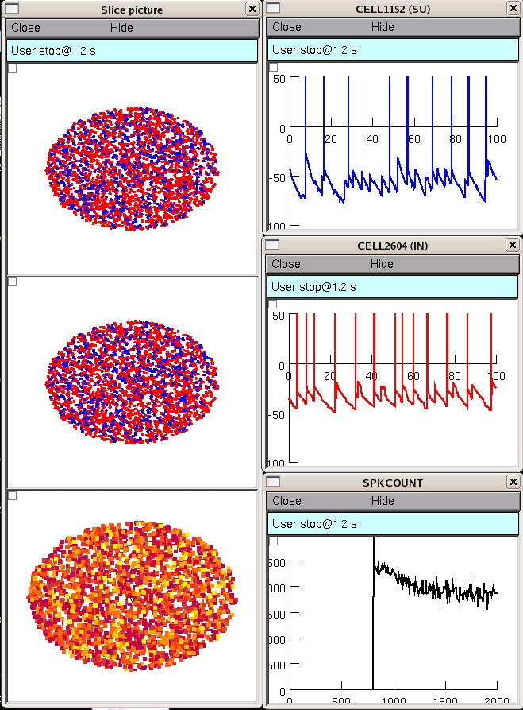

This is the readme for the model for the paper:
Lytton WW; Neymotin SA; Hines ML. The virtual slice setup. J.
Neurosci Methods. 171:309-15. PMID: 18452996, 2008.
This model will only run under unix/linux.
How to run:
nrnivmodl
nrngui mosinit.hoc
leads user through a demo of major features
turn off demo by setting 'showdemo=0' at top of mosinit.hoc
note 'Help' button at bottom of major menu 'Slice'
generated windows are not arranged since I found that my default
placements ended up off the screen for some users
while the slice runs the modeler can control the simulation
interactively through control panels and graphs of activity are
displayed:

Changelog
---------
2022-05: Updated MOD files to contain valid C++ and be compatible
with the upcoming versions 8.2 and 9.0 of NEURON.
2023-04: Updated MOD files to be compatible with the new data
structures in the upcoming 9.0 version of NEURON.